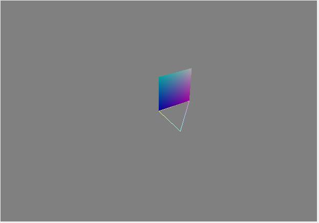

In CIS 560, we will be using the Qt Creator IDE for all of the homework assignments. In order for you to become familiar with Qt, and to make sure that it runs properly on your computer, you will install Qt Creator and run a simple test program that we supply you.
Go to the Qt download page
and download one of the installers for Qt. During the installation
process, just make sure that you install Qt 5.4, which is the
version we'll be requiring for this course and is the version
that is installed in the Moore 100 labs. You'll also need to install
Qt Creator.
The version of Qt Creator linked is the most current one, but as mentioned below you may have to install an older one
in order to get your debugger working.
If you are on a Windows machine, make sure you install Qt 5.4 with MinGW, not MSVC.
If you are on a Mac machine, make sure you install Qt 5.4 with Clang.
If you have a Mac laptop and are having trouble running the debugger in Qt Creator,
we recommend that you install Qt Creator
version 3.2.1, since that
is the IDE version that has a working debugger on Macs. You'll still install Qt 5.4, though;
Qt is the library of files needed to create applications which use
Qt classes, while Qt Creator is the IDE used to create and compile
Qt projects.
Unzip Qt_GL_Test.zip.
Open 277.pro (the main project file) in Qt Creator. The
.pro file in the Qt_GL_Test folder is the one you should
open. Once you've opened the project file, you should configure
it to use Qt 5.4.0. Run the program by pressing the button with
the green arrow in the lower-left portion of the UI. When run,
the program should produce the following image:

Go to the TBB web site and download the TBB package. TBB is a library used for multi-threading your programs, which will be helpful in the future when trying to render an image using Monte-Carlo path tracing. For now, you just need to download the libraries and install them on your machine. In a later homework assignment writeup, we'll tell you how to set it up to work with the homework basecode, which is dependent on your operating system.
We do not require you to submit anything for this homework assignment. As long as the program produces the image above, you should be good to go for future assignments.